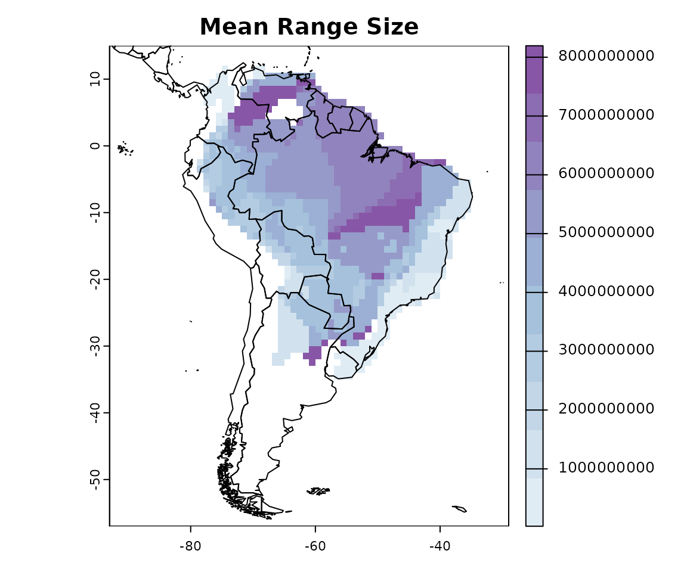

Mapping species traits: community level analysis
Source:vignettes/mapping-species-traits.Rmd
mapping-species-traits.RmdMany times scientists are interested in analyzing or describing the
geographical variation of a trait. For example, how species body size
varies across the space. Here I will show how to map species traits
using the letsR package.
To do this, let’s test the Rapoport’s rule on Phyllomedusa frogs. “Rapoport’s rule is an ecogeographical rule that states that latitudinal ranges of plants and animals are generally smaller at lower latitudes than at higher latitudes”.
To start this test we can load our PresenceAbsence
example object for the Phyllomedusa species.
Note: I recommend to use the latest version of the
letsR package on GitHub
Now, we have to calculate the species range sizes. letsR
includes a function to do that called lets.rangesize. We
can calculate the range size from the PresenceAbsence
matrix, as the number of cells or in square meters. Alternatively, we
can do it directly on the species ranges shapefiles. Let’s do the latter
option, since it is more accurate, although all options should be
correlated.
data("Phyllomedusa")
rangesize <- lets.rangesize(Phyllomedusa,
coordinates = "geographic")
rangesize <- rangesize / 1000 # Transform in km2Community level analysis
To map this trait by cell, we can use the lets.maplizer
function. You can choose the function to aggregate the species trait per
cell, but in this case we want to use the default option that will
average the values. We also want the function to return a raster with
the mapped traits, so we will set ras = TRUE.
resu <- lets.maplizer(PAM, rangesize, rownames(rangesize), ras = TRUE)
cols2 <- colorRampPalette(c('#e0ecf4','#9ebcda','#8856a7'))
plot(resu$Raster, col = cols2(10), main = "Mean Range Size")
data("wrld_simpl")
plot(sf::st_geometry(wrld_simpl), add = TRUE)
Visually, the Rapoport’s rule doesn’t seem to work on Phyllomedusa frogs. We can go further and see the relationship with latitude.
mpg <- as.data.frame(resu$Matrix)
f <- ggplot(mpg, aes(`Latitude(y)`, Variable_mean))
f + geom_smooth(model = lm) +
geom_point(col = rgb(0, 0, 0, .6)) +
labs(y = "Range Size") +
theme_bw()
Seems that the Rapoport’s rule doesn’t stand for this genus, actually the direction seems inverted, at least when analyzing it at the community level. However, to confirm this we would have to perform formal statistical analysis and control for spatial autocorrelation problems.
A quick note here. Scientists should be careful with this type of community analysis, as the repetition in species co-occurrence can easily generate spurious patterns and significant correlations (see our paper for further discussion).
To cite letsR in publications use: Bruno Vilela and Fabricio Villalobos (2015). letsR: a new R package for data handling and analysis in macroecology. Methods in Ecology and Evolution. DOI: 10.1111/2041-210X.12401